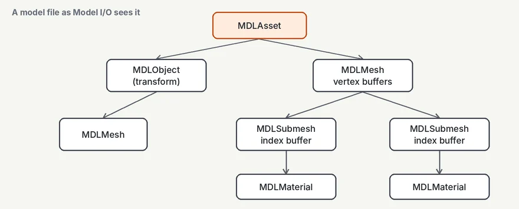

Caricare i modelli
Model I/O#
examples/Sources/11-ModelLoading, si esegue con swift run ModelLoading. Scarica tutti gli esempi oppure guarda come eseguirli.Nessuno scrive a mano i vertici di un personaggio.
Gli artisti costruiscono i modelli in programmi come Blender e li esportano in file, e il nostro compito è trasformare quei file in vertex buffer, index buffer e texture.
Sulle piattaforme Apple non serve una libreria di terze parti.
Il framework di sistema Model I/O legge i formati 3D più comuni, e MetalKit converte il risultato in oggetti Metal.
Caricare i modelli in C++
Model I/O e i tipi di mesh di MetalKit non fanno parte di metal-cpp.
La versione C++ di questa sezione carica file Wavefront OBJ con la libreria a singolo header tinyobjloader e costruisce a mano i buffer di Metal.
Le idee sono le stesse: un modello è fatto di mesh, una mesh ha un vertex buffer e un index buffer per ogni materiale, e un materiale è fatto di valori e di texture.
Per caricare USD da C++ chiama Model I/O da un piccolo file Objective-C++, come fa per AppKit il codice della finestra in Preparare il progetto, oppure converti il modello in OBJ o glTF.
I formati#
Model I/O importa, tra gli altri:
| Formato | Note |
|---|---|
| USD, USDZ, USDA, USDC | La Universal Scene Description di Pixar, il formato preferito da Apple. Supporta materiali, gerarchia e animazione. |
| OBJ (+ MTL) | Semplice e diffuso ovunque. Solo geometria e materiali di base. |
| PLY, STL | Solo geometria, comuni per le scansioni e la stampa 3D. |
| Alembic (ABC) | Cache di animazioni già calcolate. |
E glTF e FBX?
Model I/O non legge né glTF né FBX.
Convertili in USDZ con Reality Converter di Apple o con Blender, oppure usa un loader open source.
Per imparare, OBJ e USDZ bastano e avanzano.
Come è strutturato un modello#
Model I/O rappresenta un file come un albero:
MDLAsset: il file intero.
Un contenitore di oggetti.MDLObject: un nodo con una trasformazione e dei figli.MDLMesh: un nodo che ha geometria.
Possiede i vertex buffer e un vertex descriptor.MDLSubmesh: una parte di una mesh disegnata con un solo materiale.
Possiede un index buffer.MDLMaterial: proprietà con un nome, come base color, roughness e normal, ognuna delle quali è un valore o una texture.
Una mesh condivide i suoi vertici tra più submesh.
La carrozzeria di un'auto può essere una sola mesh con una submesh per la vernice, una per i vetri e una per le cromature.

Chiedere il layout che vuoi#
I file salvano i dati dei vertici nel layout scelto da chi li ha esportati.
Model I/O può riordinarli nel layout che i nostri shader si aspettano.
Parti dal vertex descriptor di Metal, convertilo e dai un nome agli attributi, così Model I/O sa quale dato va dove:
import MetalKit
import ModelIO
let vertexDescriptor = MTLVertexDescriptor()
vertexDescriptor.attributes[0].format = .float3 // position
vertexDescriptor.attributes[0].offset = 0
vertexDescriptor.attributes[1].format = .float3 // normal
vertexDescriptor.attributes[1].offset = 12
vertexDescriptor.attributes[2].format = .float2 // uv
vertexDescriptor.attributes[2].offset = 24
vertexDescriptor.layouts[0].stride = 32
let mdlDescriptor = MTKModelIOVertexDescriptorFromMetal(vertexDescriptor)
(mdlDescriptor.attributes[0] as! MDLVertexAttribute).name = MDLVertexAttributePosition
(mdlDescriptor.attributes[1] as! MDLVertexAttribute).name = MDLVertexAttributeNormal
(mdlDescriptor.attributes[2] as! MDLVertexAttribute).name = MDLVertexAttributeTextureCoordinate
// The same 32-byte layout, as a plain struct. Arrays of float pack tightly: 12 + 12 + 8.
struct MeshVertex {
float position[3];
float normal[3];
float uv[2];
};
MTL::VertexDescriptor* vertexDescriptor = MTL::VertexDescriptor::alloc()->init();
vertexDescriptor->attributes()->object(0)->setFormat(MTL::VertexFormatFloat3); // position
vertexDescriptor->attributes()->object(0)->setOffset(offsetof(MeshVertex, position));
vertexDescriptor->attributes()->object(1)->setFormat(MTL::VertexFormatFloat3); // normal
vertexDescriptor->attributes()->object(1)->setOffset(offsetof(MeshVertex, normal));
vertexDescriptor->attributes()->object(2)->setFormat(MTL::VertexFormatFloat2); // uv
vertexDescriptor->attributes()->object(2)->setOffset(offsetof(MeshVertex, uv));
vertexDescriptor->layouts()->object(0)->setStride(sizeof(MeshVertex));
Dato che è Model I/O a scrivere il buffer per noi, siamo liberi di compattarlo: in un vertex buffer .float3 occupa 12 byte, quindi un vertice ne occupa 32.
Nello spirito è lo stesso layout del nostro cubo, solo senza il padding di Swift.
Il VertexIn dello shader non cambia affatto; [[attribute(n)]] nasconde il layout.
Caricare l'asset#
let allocator = MTKMeshBufferAllocator(device: device)
let url = Bundle.main.url(forResource: "backpack", withExtension: "usdz")!
let asset = MDLAsset(url: url,
vertexDescriptor: mdlDescriptor,
bufferAllocator: allocator)
#define TINYOBJLOADER_IMPLEMENTATION
#include "tiny_obj_loader.h"
tinyobj::ObjReaderConfig config;
config.triangulate = true; // quads and n-gons become triangles
config.mtl_search_path = "models/backpack/"; // where the .mtl file and textures live
tinyobj::ObjReader reader;
if (!reader.ParseFromFile("models/backpack/backpack.obj", config)) {
std::cerr << "Could not load model: " << reader.Error() << "\n";
std::exit(1);
}
const tinyobj::attrib_t& attrib = reader.GetAttrib();
const std::vector<tinyobj::shape_t>& shapes = reader.GetShapes();
const std::vector<tinyobj::material_t>& materials = reader.GetMaterials();
Il buffer allocator è il dettaglio chiave.
Con un MTKMeshBufferAllocator Model I/O carica i dati dei vertici e degli indici direttamente in MTLBuffer, senza copie intermedie.
Subito dopo il caricamento tornano spesso utili due passi facoltativi:
asset.loadTextures() // resolve texture references in materials
for case let mesh as MDLMesh in asset.childObjects(of: MDLMesh.self) {
// Generate normals if the file has none.
mesh.addNormals(withAttributeNamed: MDLVertexAttributeNormal, creaseThreshold: 0.5)
}
// Textures are loaded later, per material, with loadTexture() from the Textures chapter.
// Generate a flat normal for a triangle whose file has none.
simd::float3 faceNormal(simd::float3 a, simd::float3 b, simd::float3 c) {
return simd::normalize(simd::cross(b - a, c - a));
}
Da Model I/O a Metal#
MetalKit trasforma ogni MDLMesh dell'asset in una MTKMesh:
let (mdlMeshes, mtkMeshes) = try MTKMesh.newMeshes(asset: asset, device: device)
// Turn one tinyobj shape into Metal buffers. Every face corner becomes a vertex.
std::vector<MeshVertex> vertices;
std::vector<uint32_t> indices;
for (const tinyobj::index_t& index : shape.mesh.indices) {
MeshVertex v{};
std::memcpy(v.position, &attrib.vertices[3 * index.vertex_index], sizeof(v.position));
if (index.normal_index >= 0) {
std::memcpy(v.normal, &attrib.normals[3 * index.normal_index], sizeof(v.normal));
}
if (index.texcoord_index >= 0) {
v.uv[0] = attrib.texcoords[2 * index.texcoord_index];
v.uv[1] = 1.0f - attrib.texcoords[2 * index.texcoord_index + 1]; // OBJ has v pointing up
}
indices.push_back(uint32_t(vertices.size()));
vertices.push_back(v);
}
MTL::Buffer* vertexBuffer = device->newBuffer(vertices.data(), sizeof(MeshVertex) * vertices.size(),
MTL::ResourceStorageModeShared);
MTL::Buffer* indexBuffer = device->newBuffer(indices.data(), sizeof(uint32_t) * indices.size(),
MTL::ResourceStorageModeShared);
Ottieni due array paralleli.
Gli oggetti MTKMesh contengono i buffer di Metal per disegnare.
Gli oggetti MDLMesh contengono ancora ciò che a Metal non interessa: materiali e trasformazioni.
I prossimi due capitoli li racchiudono in tipi nostri.
Forme già pronte#
Model I/O sa anche generare geometria, cosa comoda per le prove:
let sphere = MDLMesh(sphereWithExtent: [1, 1, 1],
segments: [48, 48],
inwardNormals: false,
geometryType: .triangles,
allocator: allocator)
sphere.vertexDescriptor = mdlDescriptor
let sphereMesh = try MTKMesh(mesh: sphere, device: device)
// Without Model I/O, a test sphere is a few lines of trigonometry.
std::vector<MeshVertex> makeSphere(float radius, int segments) {
std::vector<MeshVertex> vertices;
auto corner = [&](int i, int j) {
float theta = float(i) / segments * float(M_PI);
float phi = float(j) / segments * 2.0f * float(M_PI);
simd::float3 n = {std::sin(theta) * std::cos(phi), std::cos(theta), std::sin(theta) * std::sin(phi)};
return MeshVertex{{n.x * radius, n.y * radius, n.z * radius}, {n.x, n.y, n.z},
{float(j) / segments, float(i) / segments}};
};
for (int i = 0; i < segments; i++) {
for (int j = 0; j < segments; j++) {
MeshVertex a = corner(i, j), b = corner(i + 1, j), c = corner(i + 1, j + 1), d = corner(i, j + 1);
vertices.insert(vertices.end(), {a, c, b, a, d, c}); // two counter-clockwise triangles
}
}
return vertices;
}
Esistono inizializzatori simili per scatole, piani, cilindri, capsule, coni e icosaedri.
Ancora le coordinate di texture
Molti file seguono la convenzione di OpenGL, con v verso l'alto.
Se le texture di un modello appaiono scombinate o specchiate, ribalta v al caricamento: mesh.flipTextureCoordinates(inAttributeNamed: MDLVertexAttributeTextureCoordinate).